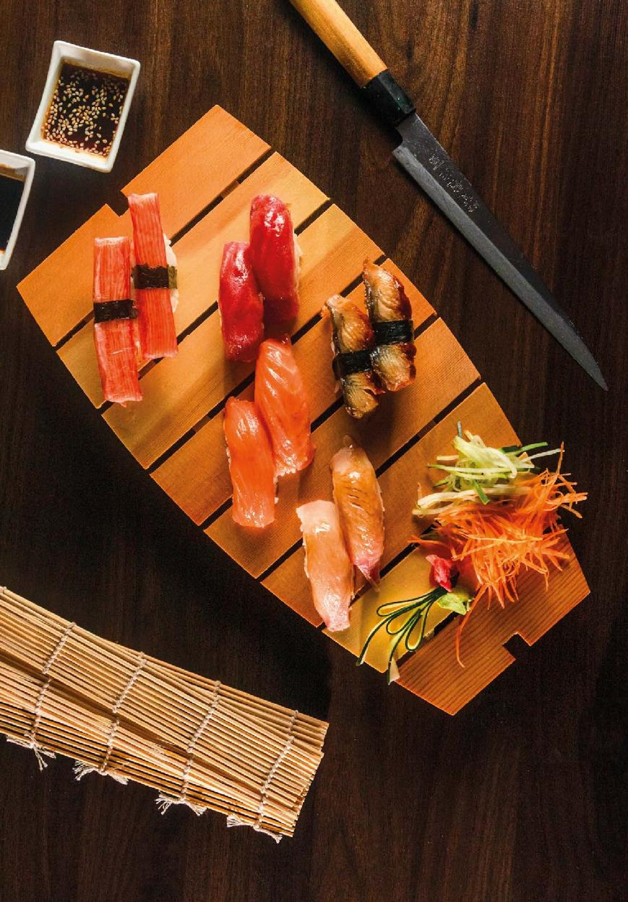

Koi Sushi & Teppanyaki メニュー
Nuestro menú
Pescado fresco, rolls en panko, caldos de ramen y salteados a la plancha. Precios en pesos colombianos.
Entradas, teppanyaki, ramen y más de treinta rolls de sushi
Los rolls se piden por 5 o por 10 bocados. Los platos marcados con ★ ganaron festivales gastronómicos en 2020.
Entradasエントリー
Palmito de cangrejo japonés apanado en panko acompañado de salsa agridulce.
Camarones salteados marinados en limón, cebolla morada, cilantro y picadillo de tomate y maicitos.
Trocitos de pollo apanado en salsa de miel, jengibre y ajonjolí.
Vegetales en tempura: brócoli, zanahoria, calabacín y champiñones. Pídelo con salsa agridulce o miel mostaza.
Camarones en panko acompañados por salsa agridulce.
Anillos de calamar en panko acompañados de salsa agridulce.
4 langostinos con queso crema, apanados en panko, acompañados de salsa ponzu o miel mostaza.
Cubitos de tofu en panko, acompañados de salsa mayochile.
Dos rollitos crocantes con rellenos típicos de Japón.
Masa wanton rellena y al vapor, acompañada de salsa ponzu.
Teppanyaki鉄板焼き
Se arma en dos pasos: escoge la preparación y luego la receta.
Paso 1 · La preparación
Yakimeshi
Arroz frito con zanahoria, cebolla, maíz, cebollín, tortilla de huevo, raíz china, ajonjolí y salsa soya, salteado al mejor estilo teppan.
Yakisoba
Pasta crespa con zanahoria, cebolla cabezona, calabacín, hatsai, brócoli, cebollín y aceite de sésamo, en salsa otafuko.
Yasaitame
Mix de zanahoria, cebolla cabezona, calabacín, hatsai, brócoli y cebollín salteados en salsa teriyaki.
Paso 2 · La receta
Trozos de lomo viche, pollo y jamón salteados al estilo japonés en salsa de soya.
Trocitos de pollo, lomo viche y cerdo marinado.
Pollo, tocineta, camarón y plátano maduro salteados en salsa soya y mantequilla de jengibre y ajo.
Costilla ahumada, pollo, tocineta y plátano maduro salteados en salsa del chef.
Camarón, trozos de lomo viche y pollo salteados en mantequilla de jengibre y ajo.
Anillos de calamar, pescado blanco, calamar baby y palmito, salteados en salsa soya.
Camarones salteados en salsa soya y mantequilla de jengibre.
Especiales特産品
Acompaña tu plato especial con 2 de estas opciones: yakimeshi, yasaitame o papas a la francesa. Los platos marcados con ★ fueron ganadores de festivales gastronómicos en 2020.
Yakimeshi con pollo y camarón y 5 bocados de sushi filadelfia. Acompáñalo con harumakis veggie o kani yaki. Ganador del Festival del Mar.
Trocitos de pollo y lomo biche desglasados en vino tinto, teriyaki y ajonjolí, con 3 langostinos desglasados en mantequilla y limón. Ganador del Festival del Asado.
Yakimeshi con trocitos de pollo y camarón al estilo teppanyaki, coronado con trozos de lomo biche desglasados en vino tinto, terminados en teriyaki y ajonjolí. Ganador del Festival del Arroz.
Trozos de pollo desglasados en vino blanco y salteados en salsa teriyaki.
Trozos de lomo de cerdo salteados en salsa teriyaki y vino tinto.
Costillas teppan glaseadas en vino tinto y salsa BBQ oriental.
Trozos de lomo viche y pollo salteados en salsa teriyaki y costilla ahumada en salsa BBQ.
Camarones salteados en vino blanco, limón y soya.
Trozos de lomo viche desglasados en vino tinto y salteados en salsa teriyaki y ajonjolí.
Camarón, calamar baby, filete de pescado, kanikama y anillos de calamar desglasados en vino blanco.
Yakimeshi con camarón, acompañado de trozos de lomo viche y pollo salteados en salsa teriyaki y costilla ahumada en salsa BBQ.
Filete de salmón desglasado en vino tinto y salsa teriyaki.
Proteína apanada salteada con vegetales en salsa agridulce, acompañada de una porción de arroz frito.
Ramenラーメン
Caldo asiático a base de vegetales, cebollín, cilantro y pasta, terminado con ajonjolí. Puedes pedirlo con huevo cocido.
Pollo.
Lomo viche.
Cerdo.
Camarón.
Tilapia, calamar baby y tubo.
Nigiri y sashimi握り寿司 · 刺身
NigiriCorte de pescado fresco servido sobre una base de arroz.
SashimiCortes muy finos de pescado fresco con guarnición de zanahoria, pepino y aguacate en salsa ponzu.
Braseada en salsa teriyaki.
Atún y salmón.
Atún y salmón fresco, tilapia ahumada.
Sushi tradicional寿司ロール
Roll relleno de salmón fresco al estilo maki.
Roll relleno de atún fresco al estilo maki.
Roll relleno de kanikama y masago al estilo maki.
Roll relleno de pescado blanco al estilo maki.
Roll relleno de langostino en panko, aguacate y mayonesa japonesa al estilo maki.
Kanikama y aguacate, terminado con topping de masago, salmón, tilapia y atún.
Combos
Tuna maki x10, sake maki x10, crab maki x5 y ebi tempura x5.
Tuna maki x10, sake maki x10, crab maki x5, ebi tempura x5, zuzuki x5 y rainbow x5.
Tuna maki x10, sake maki x10, crab maki x10, ebi tempura x10, zuzuki x10 y rainbow x10.
Barcos · Sushi appetizer
5 bocados de maki (sake maki o tuna maki) y 4 bocados de nigiri (atún, salmón, kanikama y zuzuki).
Maki: tuna x5, sake x5, crab x5 y ebi tempura x5. Nigiri: 1 atún, 1 salmón, 1 kanikama y 1 tilapia. Temaki: 1 salmón y 1 kanikama. Sashimi mixto (atún y salmón). Gunkan de masago x1.
Maki: tuna x10, sake x10, crab x10 y ebi tempura x10. Nigiri: 2 atún, 2 salmón, 2 kanikama y 2 tilapia. Temaki: 1 salmón, 1 kanikama y 1 atún. Sashimi mixto (atún, salmón y tilapia). Gunkan de masago x2.
Sushi sencillo寿司ロール
Roll en panko relleno de tilapia fresca, aguacate y queso crema.
Atún en panko, skin de salmón, aguacate y queso crema, con topping de aguacate y ajonjolí.
Palmito de cangrejo en panko, queso crema y mango, terminado con topping de plátano guayabo y salsa de maracuyá.
Salmón fresco, aguacate y queso crema.
Salmón fresco, queso crema y mango, con topping de maduro y salsa de maracuyá.
Atún fresco en salsa spicy, cebollín y aguacate, terminado al estilo maki.
Roll en panko relleno de salmón, queso crema y plátano maduro.
Kanikama, aguacate y pepino, con topping de masago y ajonjolí.
Pollo apanado, queso crema y aguacate con topping de plátano maduro, tocineta y salsa teriyaki.
Lomito a la plancha, queso crema y cebollín con topping de aguacate, tocineta y salsa teriyaki.
Combos
Filadelfia x5, alaska x5, sayori x10, miyaki x5 y spicy tuna x5.
Filadelfia x5, alaska x5, sayori x10, miyaki x5, spicy tuna x5 y crunchy tuna x10.
Filadelfia x5, alaska x5, sayori x10, miyaki x10, spicy tuna x10, crunchy tuna x10 y torimaki x10.
Sushi especial寿司ロール
Langostino marinado en vino blanco y apanado en panko, queso crema y aguacate. Terminado con salmón flameado, topping de salsa dinamita y crunchy tempura.
Langostino tempura, kanikama y aguacate. Terminado con topping de masago, ajonjolí y un toque de salsa dinamita.
Calamares apanados, aguacate, queso crema y masago, terminado con tartar de atún, salmón y cebollín.
Pescado blanco, camarones apanados, queso crema y plátano maduro; terminado con palmito en salsa de queso. Panko opcional.
Atún, salmón y kanikama tempurados con aguacate, masago y ajonjolí, terminado con un dip de dinamita.
Langostino tempura, aguacate y queso crema. Terminado con topping de salmón fresco y salsa de maracuyá.
Salmón fresco, atún, cebollín y queso crema, con topping de salsa dinamita, kanikama, masago y ajonjolí.
Camarones apanados, queso crema y aguacate con topping de plátano maduro, terminado con salsa de queso caliente y teriyaki.
Calamar apanado, queso crema y aguacate, con topping de pescado blanco flameado y salsa dinamita.
Roll apanado de camarón, queso crema, plátano maduro y aguacate. Topping de salsa dinamita, kanikama, masago, cebollín y ajonjolí.
Piel de salmón crocante, queso crema y aguacate. Terminado con topping de salmón fresco y salsa de maracuyá.
Roll relleno de salmón apanado y aguacate, con topping de queso y kanikama, acompañado de salsa agridulce.
Roll tempura relleno de palmito apanado, mango y aguacate, con topping de camarones en salsa de queso y anguila.
x5 de tilapia apanada, queso crema y aguacate con topping de camarones en panko y salsa agridulce · x5 de langostino en panko, kanikama y aguacate con topping de atún flameado, mayo dulce y cebollín.
Combos
Sake special x10, valluno x10 y ojo de tigre x10.
Sake special x10, valluno x10, ojo de tigre x10 y rock and roll x10.
Sake special x10, valluno x10, ojo de tigre x10, rock and roll x10 y shiretoko x10.
Sake special x10, valluno x10, ojo de tigre x10, rock and roll x10, shiretoko x10 y taimaki x10.
Sake special x10, valluno x10, ojo de tigre x10, rock and roll x10, shiretoko x10, taimaki x10, osaka x10 y dragón koi x10.
Vegetarianoベジタリアン
Roll apanado en panko relleno de pepino, aguacate, zanahoria y mango.
Vegetales tempura y aguacate, terminado en salsa teriyaki.
Roll relleno de queso crema, mango y crunchy de zanahoria, con topping de plátano maduro y salsa de maracuyá.
Roll relleno de aguacate y tofu apanado, con topping de champiñones salteados y ajonjolí.
Pasta con vegetales salteados, maíz dulce, raíz china y champiñón. Pídelo con o sin huevo.
Frutos secos y champiñones salteados en salsa teriyaki. Pídelo en yakimeshi, yasaitame o yakisoba.
Frutos secos, champiñones y tofu salteados en salsa teriyaki. Pídelo en yakimeshi, yasaitame o yakisoba.
Yakimeshi con frutos secos, 2 harumakis veggie y 5 bocados de tropical veggie.
Tofu apanado salteado con vegetales y champiñones en salsa agridulce, acompañado de una porción de arroz frito (ligeramente picante).
Veggie crunchy x10, yasai roll x10 y tropical veggie x10.
Menú infantilキッズメニュー
Trozos de pollo apanados acompañados de papas a la francesa y una copa de helado.
Pasta ramen con crema de leche, acompañada de una copa de helado.
Arroz con la proteína de tu elección, acompañado de una copa de helado.
Postresデザート
Empanadas rellenas de arequipe y queso mozzarella, acompañadas de una bola de helado de vainilla y salsa de frutas.
Helado apanado en panko acompañado de salsa del chef.
Brownie caliente con helado de vainilla.
Bebidas飲み物
Jugos
Limonadas
Sodas italianas
Café
Gaseosas y agua
CervezasSujetas a disponibilidad.
Artesanal.
Artesanal.
CoctelesFrutas: mango viche, fresa, maracuyá y sandía. 2 x 1 de lunes a jueves de 6:00 a 9:00 pm; viernes a domingo 2 x 50.000 (mismo sabor).
Adiciones追加
Proteína
Otras adiciones
¿Listo para pedir?
Escríbenos por WhatsApp con tu pedido y te confirmamos el tiempo de entrega. Domicilios en Cali, Buga, Palmira y Rozo.
Precios en pesos colombianos (COP), según la carta 2026; pueden cambiar sin previo aviso. Cervezas sujetas a disponibilidad. Pide a domicilio por WhatsApp al +57 320 385 3275.